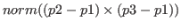
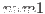
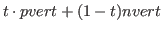

vplus vector-list [function]
-
-
returns a newly created float-vector that is the sum of
all the elements of vector-list.
The difference from v+ is that vplus computes
the sum of more than two arguments and no result vector can be specified.
vector-mean vector-list [function]
-
-
returns the mean vector of vector-list.
triangle a b c &optional (normal #f(0 0 1)) [function]
-
-
a, b, c are float-vectors representing 2 or 3 dimensional points.
normal is the normal vector of the plane on which a,b, and c
lie.
Triangle returns 2*area of a triangle formed by a,b,c.
Triangle is positive if a,b, and c turn clockwise
when you are looking in the same direction as normal.
In other words, if triangle is positive, c locates at the
left hand side of line a-b,
and b lies at the right side of ac.
triangle-normal a b c [function]
-
-
finds a normal vector which is vertical to the triangle defined by
three points a,b,and c.
vector-angle v1 v2 &optional (normal (v* v1 v2)) [function]
-
-
Computes an angle between two vectors,
denoted by
 .
v1,v2 and normal must be normalized vectors.
When normal is not given, a normalized vector commonly perpendicular to
v1 and v2 is used, in which case the result is always a positive
angle in the range between and
.
v1,v2 and normal must be normalized vectors.
When normal is not given, a normalized vector commonly perpendicular to
v1 and v2 is used, in which case the result is always a positive
angle in the range between and  .
In order to obtain a signed angle, normal must be specified explicitly.
.
In order to obtain a signed angle, normal must be specified explicitly.
face-normal-vector vertices [function]
-
-
Computes surface normal vector from a list of float-vectors which lie
on the same plane.
farthest p points [function]
-
-
finds the farthest point from p in the list of 3D float-vectors,
points.
farthest-pair points [function]
-
-
finds the farthest point pair in the list of 3D float-vectors, points.
maxindex 3D-floatvec [function]
-
-
Finds the index of the absolute maximum value of three elements.
random-vector &optional (range 1.0) [function]
-
-
Generates a random vector which is distributed homogeneously
in 3D Cartesian space.
random-normalized-vector &optional (range 1.0) [function]
-
-
returns a normalized-3D random vector.
random-vectors count range [function]
-
-
returns a list of random vectors.
line-intersection p1 p2 p3 p4 [function]
-
-
p1, p2, p3 and p4 are all float-vectors of more than two dimensions.
p1-p2 and p3-p4 define two lines on a plane.
line-intersection returns a list of two parameters of the
intersection point for these two lines.
When used in three dimension,
p1, p2, p3 and p4 must be coplanar.
collinear-p p1 p2 p3 &optional tolerance [function]
-
-
p1, p2, p3 are all three-dimensional float-vectors representing
three point locations.
Collinear-p returns the parameter for p2 on
the line p1-p3 if
 is smaller than
*coplanar-threshold*, otherwise NIL.
find-coplanar-vertices p1 p2 p3 vlist [function]
-
-
p1, p2, p3 are all three-dimensional float-vectors representing
a plane.
Find-coplanar-vertices looks for coplanar points in vlist
that lie on the plane.
find-connecting-edge vertex edgelist [function]
-
-
finds an edge in edgelist that connects to vertex.
make-vertex-edge-htab bodfacs [function]
-
-
bodfacs is a body or a list of faces.
make-vertex-edge-htab makes a hash-table which allows retrieving of
edges connected to a vertex.
left-points points p1 p2 normal [function]
-
-
Assume points, p1, and p2
lie on the plane whose normal vector is normal.
Left-points searches in points and collects ones
lying in the left hand side of the line passing on p1, p2.
right-points points p1 p2 normal [function]
-
-
Assume points, p1, and p2
lie on the plane whose normal vector is normal.
Right-points searches in points and collects ones
lying in the right hand side of the line determined by p1, p2.
left-most-point points p1 p2 normal [function]
-
-
Assume points, p1, and p2
lie on a plane whose normal vector is normal.
left-points searches in points which lie in the left-hand
side of the line determined by p1, p2 and returns the farthest one.
right-most-point points p1 p2 normal [function]
-
-
Assume points, p1, and p2
lie on a plane whose normal vector is normal.
right-most-point searches in points which lie in the right-hand
side of the line determined by p1, p2 and returns the farthest one.
eps= num1 num2 [(tolerance *epsilon*)] [function]
-
-
compares two float numbers num1 and num2 for equality
with the tolerance of *epsilon*.
eps num1 num2 [(tolerance *epsilon*)] [function]
num1 num2 [(tolerance *epsilon*)] [function]
-
-
returns T if  is apparently less than
 , i.e.
, i.e.
 .
.
eps num1 num2 [(tolerance *epsilon*)] [function]
num1 num2 [(tolerance *epsilon*)] [function]
-
-
returns T if is possibly less than or equal to ,
i.e.
 .
.
eps num1 num2 [(tolerance *epsilon*)] [function]
num1 num2 [(tolerance *epsilon*)] [function]
-
-
returns T if is apparently greater than , i.e.
.
eps num1 num2 [(tolerance *epsilon*)] [function]
num1 num2 [(tolerance *epsilon*)] [function]
-
-
returns T if is possibly greater than or equal to ,
i.e.
 .
.
bounding-box [class]
:super object
:slots (minpoint maxpoint)
-
- defines a minimal rectangular-parallel-piped which is bounded by
the planes parallel to xy-, yz- and zx-planes.
Bounding-box can be used in any dimension according to the
dimension of vectors given at the initialization.
Bounding-box had been defined by the name of surrounding-box.
:box [method]
-
- returns this bounding-box object itself.
:volume [method]
-
- returns the volume of this bounding box.
:grow rate [method]
-
-
increases or decreases the size of this box by the rate.
When rate is 0.01, the box is enlarged by 1%.
:inner point [method]
-
-
returns T if point lies in this box, otherwise nil.
:intersection box2 &optional tolerance [method]
-
-
returns the intersectional bounding box of this box and box2.
If tolerance is given, the box is enlarged by it.
If there is no intersection, NIL is returned.
:union box2 [method]
-
-
returns the union of bounding box of this box and box2.
:intersectionp box2 [method]
-
-
returns T if this box has the intersection with the box2,
NIL otherwise.
This method is faster than :intersection because no new instance
of bounding-box is created.
:extreme-point direction [method]
-
-
returns one of the eight corner points yielding the largest dot-product
with direction.
:corners [method]
-
-
returns the list of all vertices of this box.
If this box defines 2D bounding-box, then 4 points are returned,
3D, 8, and so on.
:below box2 &optional (direction #(0 0 1) [method]
-
-
returns T if this box is below box2 in direction.
This is used to check whether two box intersects when this box is
moved toward direction.
:body [method]
-
-
returns a body object that represents a cube bounded by this box.
:init vlist &optional tolerance [method]
-
-
sets minpoint and maxpoint slots looking in vlist.
If tolerance (float) is specified, the box is grown by the amount.
make-bounding-box points [tolerance] [function]
-
- finds the minimum and maximum
coordinates in the list of points, and make an instance of
bounding-box.
bounding-box-union boxes [tolerance *contact-threshold*] [function]
-
-
makes an instance of the surrounding-box representing the union
of boxes. The resulted box is expanded by the tolerance.
bounding-box-intersection boxes [tolerance *contact-threshold*] [function]
-
-
makes an instance of the surrounding-box representing the intersection
of boxes. The resulted box is expanded by the tolerance.
2016-03-23